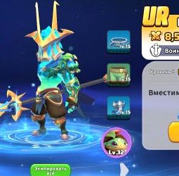
ЮньUR
Воин
ОТКРЫТЬ КАРТОЧКУ →
Каталог 16 героев Royal Crown: Kingdom Wars: навыки, специализация, редкость и способы получения. Ниже — предварительные оценки, внешние рекомендации и авторские сборки для Арены.
Нажми на карточку, чтобы открыть навыки и информацию о получении. Поиск работает по имени, редкости и специализации.

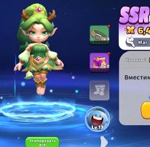
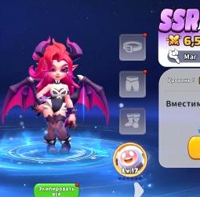
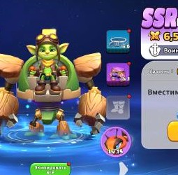
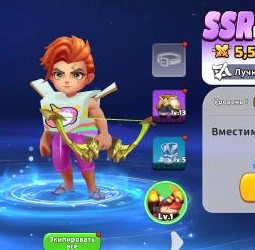
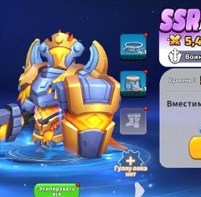
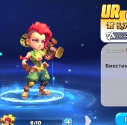
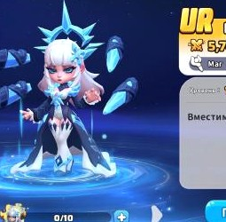
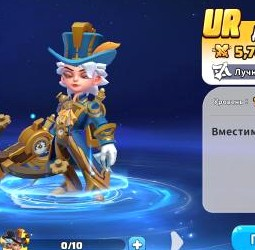
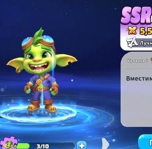
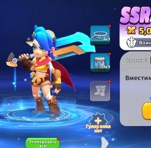
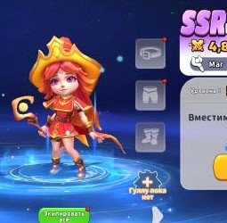
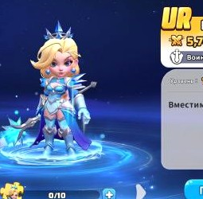
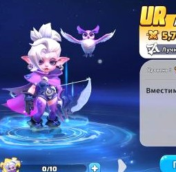
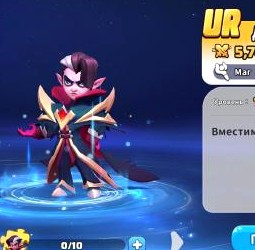
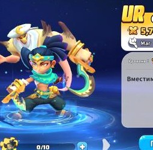
Выбери двух персонажей, чтобы сравнить их специализацию, все четыре навыка, способы получения и сильные стороны. Сравнение не присваивает выдуманные баллы и не объявляет универсального победителя.
Это аналитическая оценка ChatGPT по видимым эффектам навыков, роли и синергии. Она не является официальным рейтингом и не заменяет проверку на практике.
Высокий потенциал для PvP по набору контроля, массового/дополнительного урона, выживаемости и ослабления противника. Особенно интересны для тестирования в UR-сборках.
Полезные контроль, поддержка, усиление профильного типа войск и урон. Могут стать основой сильных команд при подходящей прокачке.
Есть полезные эффекты для отдельных режимов, типов войск или задач. Их ценность сильно зависит от доступности, звёзд, уровня навыков и состава соперника.
Ранги предварительные. Они не основаны на официальной статистике побед/использования: в открытых источниках не найден подтверждённый актуальный статистический тир-лист именно для нашего набора из 16 героев. Для F2P особенно важно учитывать не только редкость, но и реальную прокачку.
Ниже — варианты для тестирования. Передний ряд отведён героям, которым полезнее принимать основной удар; задний — стрелкам, магам и поддержке. Проверь фактическую механику расстановки в своём режиме Арены.
Внешние материалы используем как ориентир, а не как абсолютную истину. В составах могут встречаться герои, которых пока нет в нашем каталоге.
Royal Crown Vault
Публикует примеры PvP-составов, включая King's Vanguard с Валькирией, Артемидой и Да Винчи, а также оборонительные комбинации.
YSWL — Beginner's Guide
Приводит F2P-связку Dragon's Will: Айви, Гринк, Робин, Лилит и Ния; также перечисляет атакующий и оборонительный варианты.
Подпись к авторским рекомендациям: «Составы команд, оценки героев и варианты построения разработаны ChatGPT на основе анализа игровых скриншотов, навыков персонажей и доступных открытых материалов».